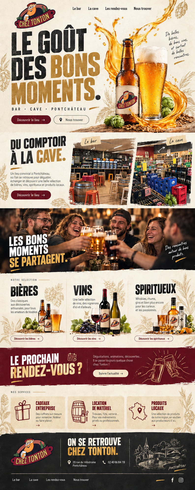
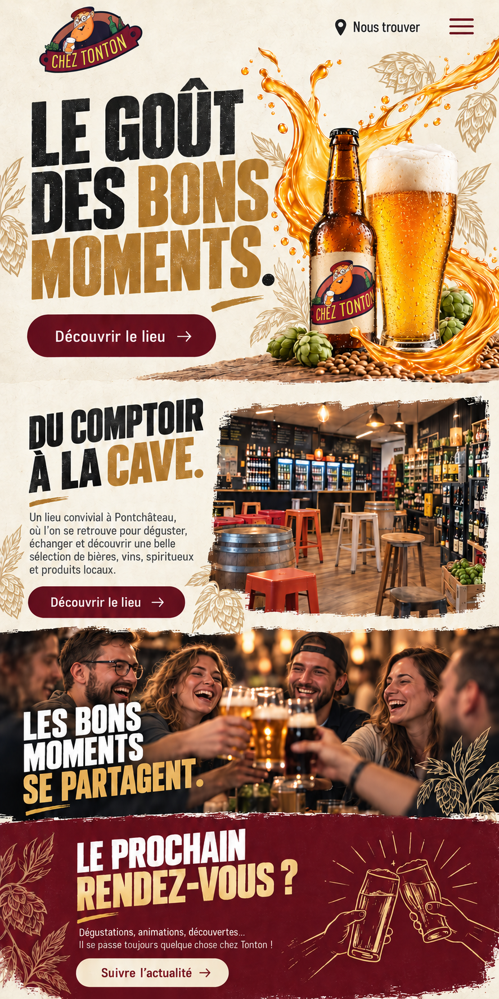
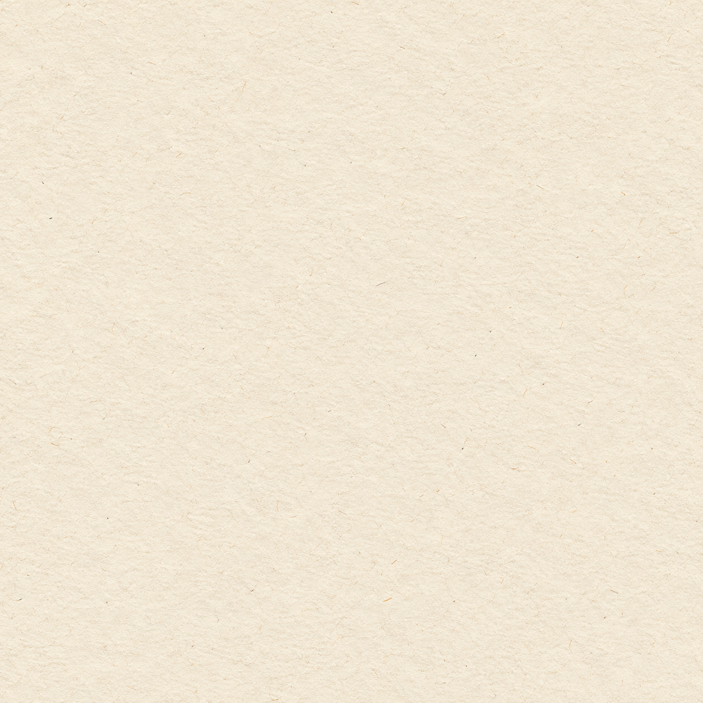
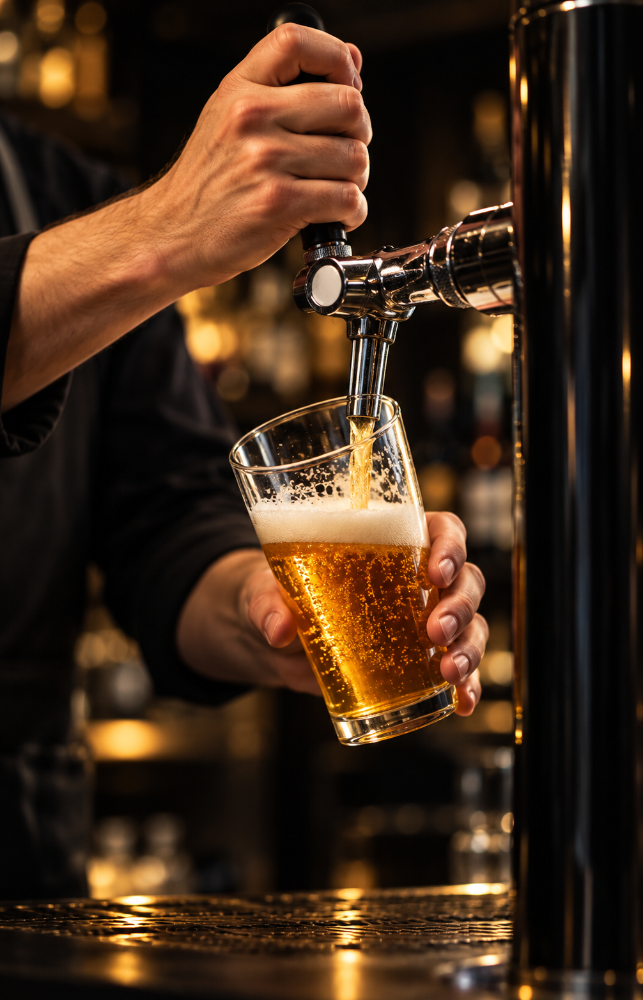

01-direction-desktop.png
793 × 1983
Mockup da página desktop. Referência, não background rasterizado.

12-direction-mobile.png
887 × 1774
Adaptação mobile do conceito, não screenshot de site implementado.

02-papier-texture.png
1254 × 1254
Papel creme para fundos, sem texto. Exportar em formato leve.

10-pov-frigo.png
1672 × 941
Abertura de câmera dentro do frigorífico, campanha conceitual.

03-bouteille-alpha.png
1024 × 1536
Garrafa com rótulo Chez TonTon, isolada para o plano do hero.

04-ruban-biere-alpha.png
1536 × 1024
Arco de cerveja com alpha para transição por composição.

05-verre-alpha.png
1024 × 1536
Copo de cerveja isolado, plano de primeiro plano.

06-bar-photo-retouche.png
1575 × 998
Edição da foto real fornecida: setas removidas e luz ajustada.

07-cave-photo-retouche.png
1522 × 1033
Edição da foto real fornecida: setas removidas e luz ajustada.

09-pression-editorial.png
1006 × 1563
Serviço de pressão conceitual, não equipe real.

11-pov-convivialite.png
1672 × 941
Campanha conceitual de encontro entre adultos, não clientes reais.

08-logo-chez-tonton-transparent.png
1536 × 1024
Logo reconstruído frontalmente da foto da fachada, PNG com alpha.